FIGUREPATH <- "~/who_ferritin_comment/results/figures/"
knots <- 3:25
response <- "Hemoglobin"
zoom <- T
boot_n <- 1000NHANES tests
#source("~/who_ferritin_comment/src/results_helper_funcs.R")
source("~/who_ferritin_comment/src/functions.R")
library(dplyr)
library(rms)
library(mcp)
library(boot)
library(ggExtra)Load data
# Load data
# Naming assumptions:
# Ferritin, Hemoglobin, sTfR
data <- readRDS("~/who_ferritin_comment/data/NHANES_variables_filtered.rds")Test RCS model selection
# label: test-rcs-knots
#| message: false
#| warning: false
#| fig-align: center
data_full <- data
data <- data %>% select(Ferritin, as.name(response))
# set datadist
dd <- datadist(data)
options(datadist = "dd")
investigate_RCS(data, response, knots, zoom, FIGUREPATH)Warning: Using `size` aesthetic for lines was deprecated in ggplot2 3.4.0.
ℹ Please use `linewidth` instead.Scale for x is already present.
Adding another scale for x, which will replace the existing scale.Warning: Removed 589 rows containing missing values (`geom_point()`).Warning: Removed 128 rows containing missing values (`geom_line()`).Warning: Removed 589 rows containing missing values (`geom_point()`).Warning: Removed 128 rows containing missing values (`geom_line()`).Scale for x is already present.
Adding another scale for x, which will replace the existing scale.Warning: Removed 460 rows containing missing values (`geom_point()`).
Removed 128 rows containing missing values (`geom_line()`).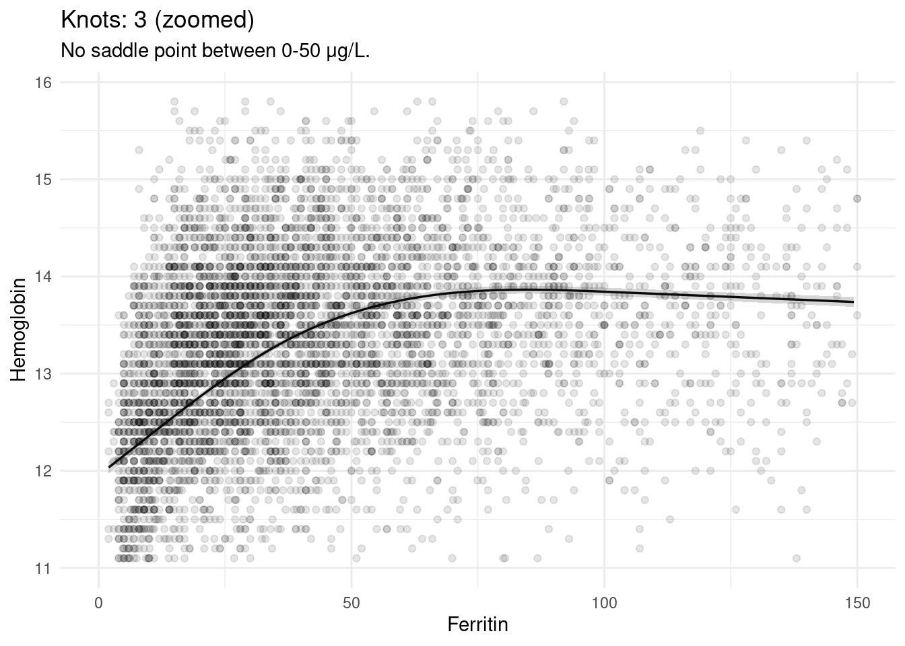
Warning: Removed 460 rows containing missing values (`geom_point()`).
Removed 128 rows containing missing values (`geom_line()`).Scale for x is already present.
Adding another scale for x, which will replace the existing scale.Warning: Removed 395 rows containing missing values (`geom_point()`).
Removed 128 rows containing missing values (`geom_line()`).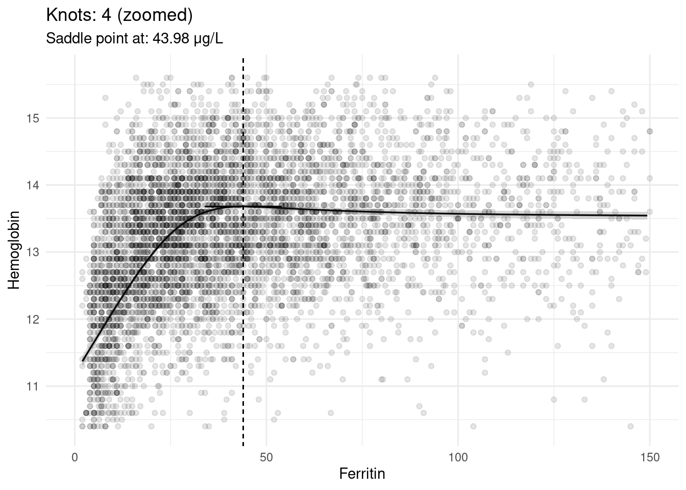
Warning: Removed 395 rows containing missing values (`geom_point()`).
Removed 128 rows containing missing values (`geom_line()`).Scale for x is already present.
Adding another scale for x, which will replace the existing scale.Warning: Removed 390 rows containing missing values (`geom_point()`).
Removed 128 rows containing missing values (`geom_line()`).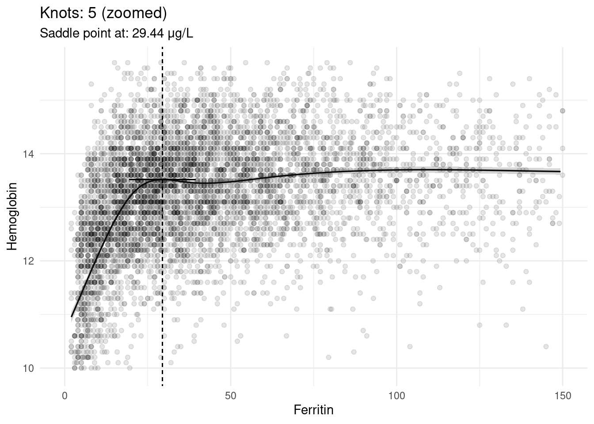
Warning: Removed 390 rows containing missing values (`geom_point()`).
Removed 128 rows containing missing values (`geom_line()`).Scale for x is already present.
Adding another scale for x, which will replace the existing scale.Warning: Removed 371 rows containing missing values (`geom_point()`).
Removed 128 rows containing missing values (`geom_line()`).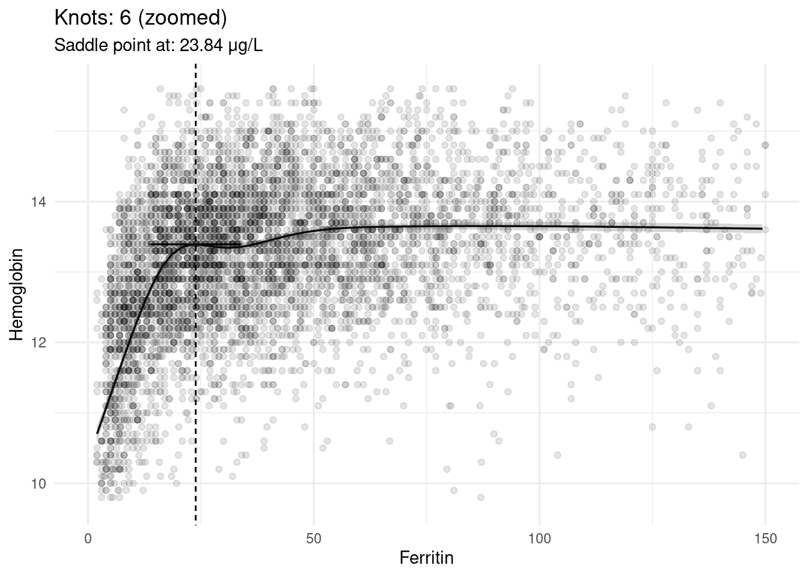
Warning: Removed 371 rows containing missing values (`geom_point()`).
Removed 128 rows containing missing values (`geom_line()`).Scale for x is already present.
Adding another scale for x, which will replace the existing scale.Warning: Removed 361 rows containing missing values (`geom_point()`).
Removed 128 rows containing missing values (`geom_line()`).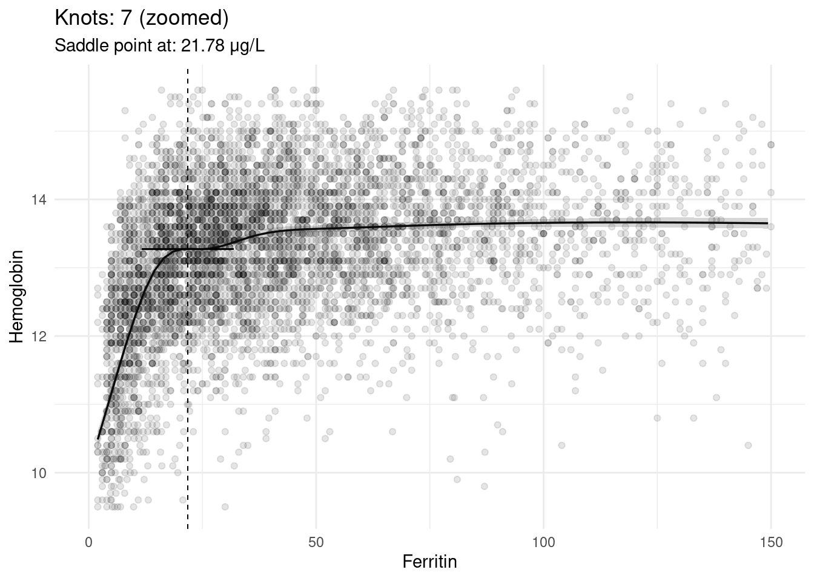
Warning: Removed 361 rows containing missing values (`geom_point()`).
Removed 128 rows containing missing values (`geom_line()`).Scale for x is already present.
Adding another scale for x, which will replace the existing scale.Warning: Removed 356 rows containing missing values (`geom_point()`).
Removed 128 rows containing missing values (`geom_line()`).Warning: Removed 356 rows containing missing values (`geom_point()`).
Removed 128 rows containing missing values (`geom_line()`).Scale for x is already present.
Adding another scale for x, which will replace the existing scale.Warning: Removed 355 rows containing missing values (`geom_point()`).
Removed 128 rows containing missing values (`geom_line()`).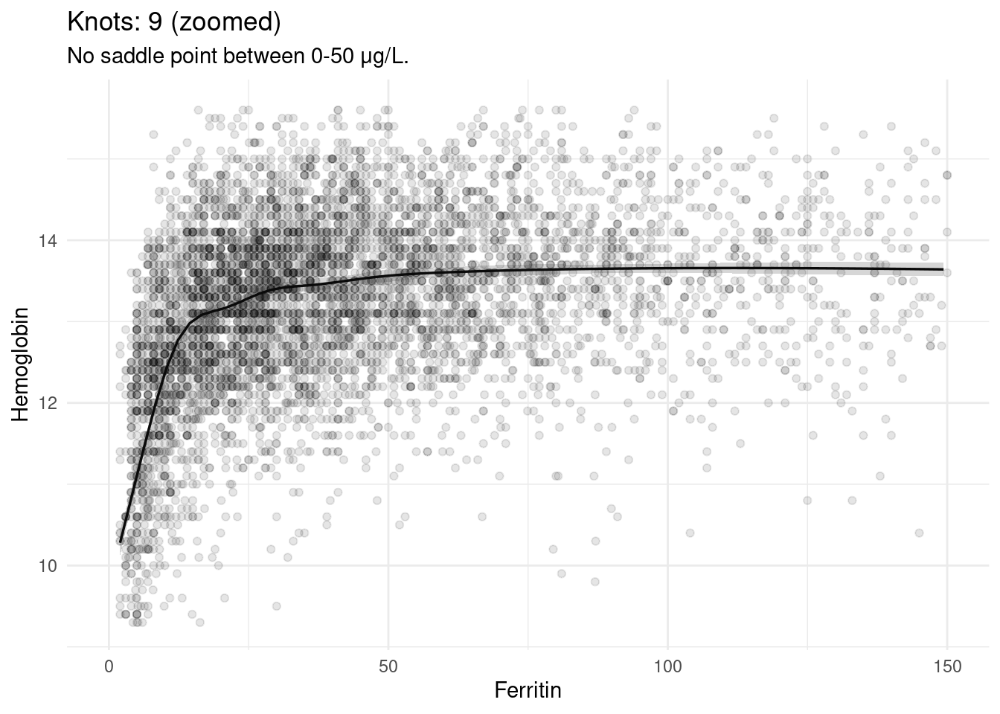
Warning: Removed 355 rows containing missing values (`geom_point()`).
Removed 128 rows containing missing values (`geom_line()`).Scale for x is already present.
Adding another scale for x, which will replace the existing scale.Warning: Removed 355 rows containing missing values (`geom_point()`).
Removed 128 rows containing missing values (`geom_line()`).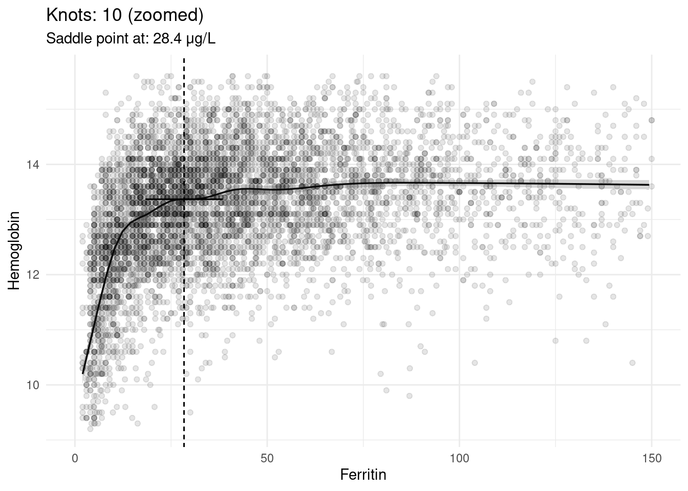
Warning: Removed 355 rows containing missing values (`geom_point()`).
Removed 128 rows containing missing values (`geom_line()`).Scale for x is already present.
Adding another scale for x, which will replace the existing scale.Warning: Removed 355 rows containing missing values (`geom_point()`).
Removed 128 rows containing missing values (`geom_line()`).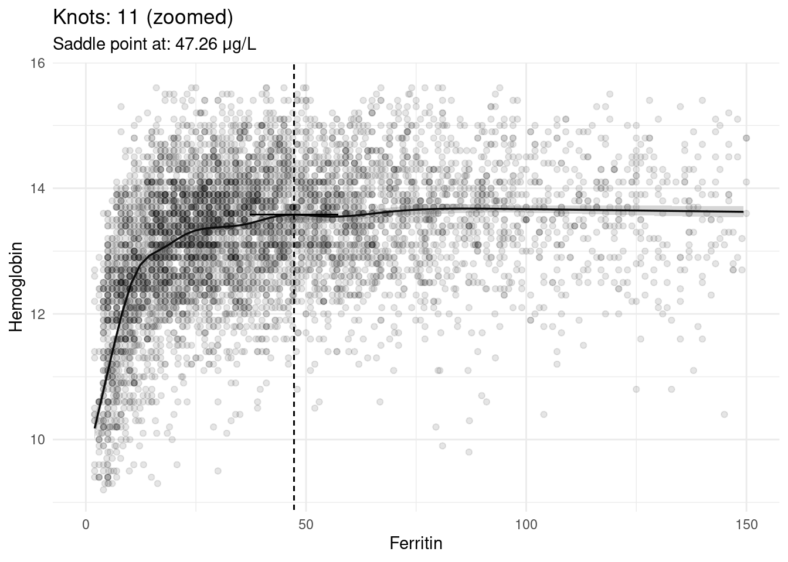
Warning: Removed 355 rows containing missing values (`geom_point()`).
Removed 128 rows containing missing values (`geom_line()`).Scale for x is already present.
Adding another scale for x, which will replace the existing scale.Warning: Removed 343 rows containing missing values (`geom_point()`).
Removed 128 rows containing missing values (`geom_line()`).Warning: Removed 343 rows containing missing values (`geom_point()`).
Removed 128 rows containing missing values (`geom_line()`).Scale for x is already present.
Adding another scale for x, which will replace the existing scale.Warning: Removed 332 rows containing missing values (`geom_point()`).
Removed 128 rows containing missing values (`geom_line()`).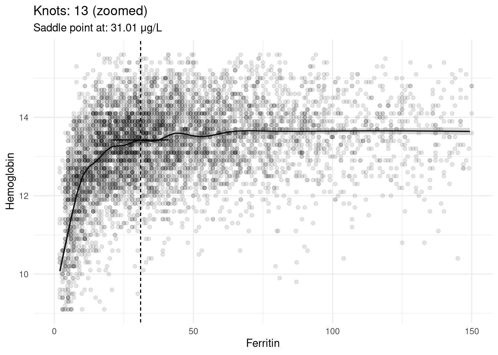
Warning: Removed 332 rows containing missing values (`geom_point()`).
Removed 128 rows containing missing values (`geom_line()`).Scale for x is already present.
Adding another scale for x, which will replace the existing scale.Warning: Removed 332 rows containing missing values (`geom_point()`).
Removed 128 rows containing missing values (`geom_line()`).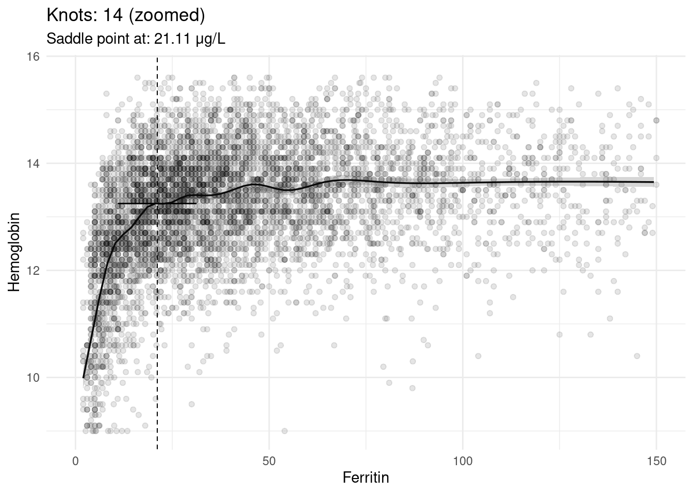
Warning: Removed 332 rows containing missing values (`geom_point()`).
Removed 128 rows containing missing values (`geom_line()`).Scale for x is already present.
Adding another scale for x, which will replace the existing scale.Warning: Removed 332 rows containing missing values (`geom_point()`).
Removed 128 rows containing missing values (`geom_line()`).Warning: Removed 332 rows containing missing values (`geom_point()`).
Removed 128 rows containing missing values (`geom_line()`).Scale for x is already present.
Adding another scale for x, which will replace the existing scale.Warning: Removed 323 rows containing missing values (`geom_point()`).
Removed 128 rows containing missing values (`geom_line()`).Warning: Removed 323 rows containing missing values (`geom_point()`).
Removed 128 rows containing missing values (`geom_line()`).Scale for x is already present.
Adding another scale for x, which will replace the existing scale.Warning: Removed 323 rows containing missing values (`geom_point()`).
Removed 128 rows containing missing values (`geom_line()`).Warning: Removed 323 rows containing missing values (`geom_point()`).
Removed 128 rows containing missing values (`geom_line()`).Scale for x is already present.
Adding another scale for x, which will replace the existing scale.Warning: Removed 320 rows containing missing values (`geom_point()`).
Removed 128 rows containing missing values (`geom_line()`).Warning: Removed 320 rows containing missing values (`geom_point()`).
Removed 128 rows containing missing values (`geom_line()`).Scale for x is already present.
Adding another scale for x, which will replace the existing scale.Warning: Removed 320 rows containing missing values (`geom_point()`).
Removed 128 rows containing missing values (`geom_line()`).Warning: Removed 320 rows containing missing values (`geom_point()`).
Removed 128 rows containing missing values (`geom_line()`).Scale for x is already present.
Adding another scale for x, which will replace the existing scale.Warning: Removed 320 rows containing missing values (`geom_point()`).
Removed 128 rows containing missing values (`geom_line()`).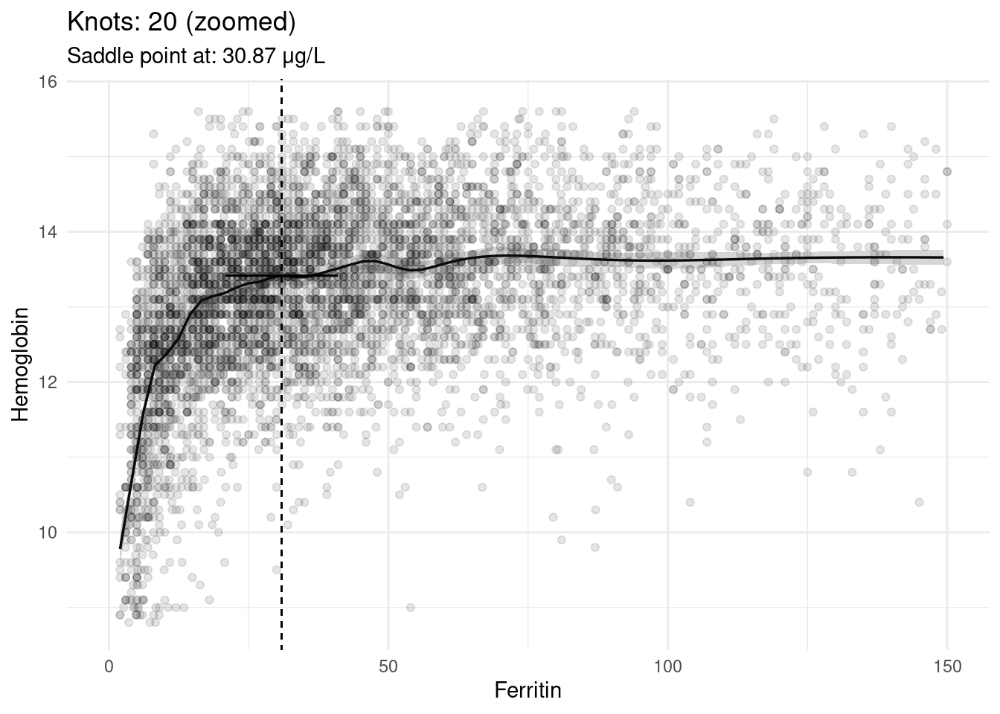
Warning: Removed 320 rows containing missing values (`geom_point()`).
Removed 128 rows containing missing values (`geom_line()`).Scale for x is already present.
Adding another scale for x, which will replace the existing scale.Warning: Removed 320 rows containing missing values (`geom_point()`).
Removed 128 rows containing missing values (`geom_line()`).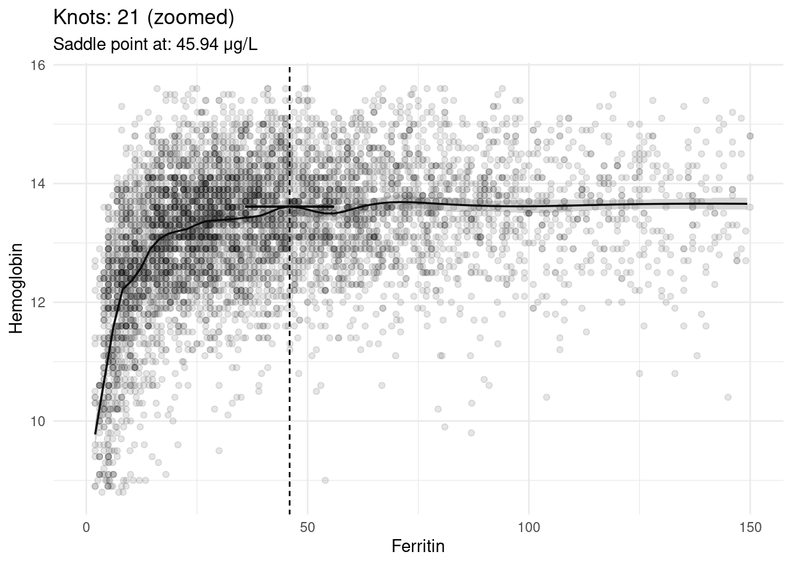
Warning: Removed 320 rows containing missing values (`geom_point()`).
Removed 128 rows containing missing values (`geom_line()`).Scale for x is already present.
Adding another scale for x, which will replace the existing scale.Warning: Removed 320 rows containing missing values (`geom_point()`).
Removed 128 rows containing missing values (`geom_line()`).Warning: Removed 320 rows containing missing values (`geom_point()`).
Removed 128 rows containing missing values (`geom_line()`).Scale for x is already present.
Adding another scale for x, which will replace the existing scale.Warning: Removed 320 rows containing missing values (`geom_point()`).
Removed 128 rows containing missing values (`geom_line()`).Warning: Removed 320 rows containing missing values (`geom_point()`).
Removed 128 rows containing missing values (`geom_line()`).Scale for x is already present.
Adding another scale for x, which will replace the existing scale.Warning: Removed 320 rows containing missing values (`geom_point()`).
Removed 128 rows containing missing values (`geom_line()`).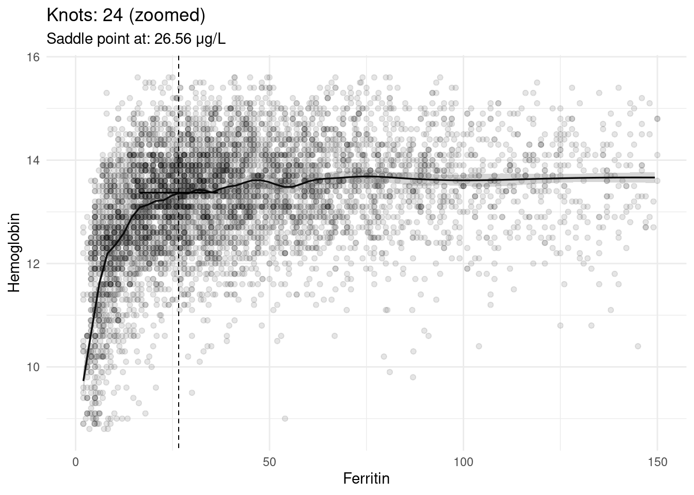
Warning: Removed 320 rows containing missing values (`geom_point()`).
Removed 128 rows containing missing values (`geom_line()`).Warning: Removed 4 rows containing missing values (`geom_point()`).Warning: Removed 5 rows containing missing values (`geom_segment()`).Warning: Removed 5 rows containing missing values (`geom_text()`).Warning: Removed 4 rows containing missing values (`geom_point()`).Warning: Removed 5 rows containing missing values (`geom_segment()`).Warning: Removed 5 rows containing missing values (`geom_text()`).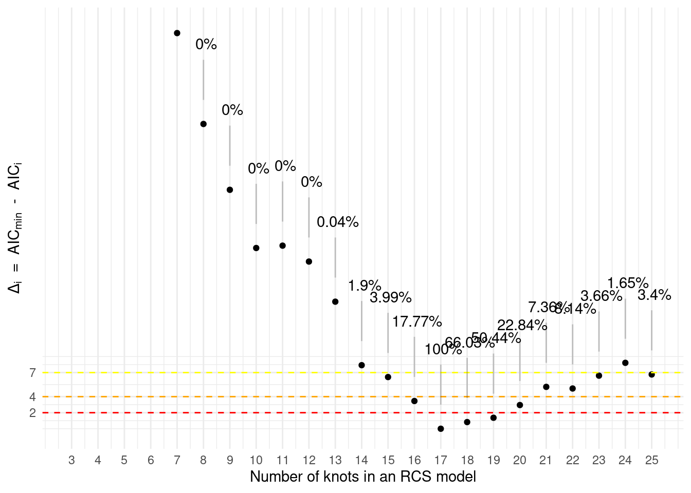
Bootstrap knot selection
# label: boot-select-knot_n
#| message: false
#| warning: false
#| fig-align: center
# The function boot_knot_selection is defined in functions.R
if (!file.exists(paste0("~/who_ferritin_comment/results/boot/", response, "_rcs_knots_", boot_n, "_bootobj.rds"))) {
boot_knots <- boot(data = data, statistic = boot_knot_selection, R = boot_n, response = response, knots = knots)
boot_knot_ci <- boot.ci(boot_knots, type = "perc") # BCa not computable on discrete data with this tight interval
saveRDS(boot_knots, paste0("~/who_ferritin_comment/results/boot/", response, "_rcs_knots_", boot_n, "_bootobj.rds"))
saveRDS(boot_knot_ci, paste0("~/who_ferritin_comment/results/boot/", response, "_rcs_knot_ci_", boot_n, "_boot_ci.rds"))
} else {
boot_knots <- readRDS(paste0("~/who_ferritin_comment/results/boot/", response, "_rcs_knots_", boot_n, "_bootobj.rds"))
boot_knot_ci <- readRDS(paste0("~/who_ferritin_comment/results/boot/", response, "_rcs_knot_ci_", boot_n, "_boot_ci.rds"))
}
boot_df <- data.frame(t = boot_knots$t) %>%
mutate(within_ci = (t >= boot_knot_ci$percent[4] & t <= boot_knot_ci$percent[5]))
bootknot_ci_p <- ggplot(data = boot_df, aes(x = t, y = ..count../sum(..count..), fill = within_ci)) +
geom_bar() +
theme_minimal() +
labs(x = "Selected number of knots",
y = "Frequency",
fill = "Within CI")
ggsave(paste0("~/who_ferritin_comment/results/figures/", response, "_rcs_boot_knot_distr.pdf"), bootknot_ci_p, width = 8, height = 6, device = cairo_pdf)Warning: The dot-dot notation (`..count..`) was deprecated in ggplot2 3.4.0.
ℹ Please use `after_stat(count)` instead.bootknot_ci_p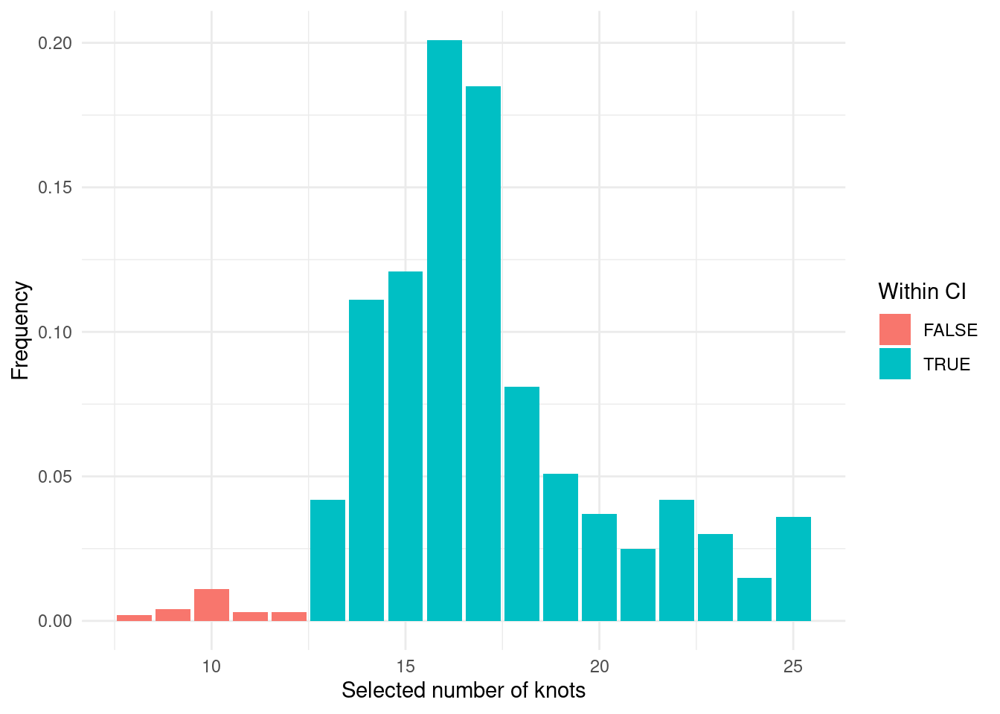
selected_knot_n <- boot_knots$t0Bootstrap threshold
Now use selected knot number to bootstrap saddle shenanigans
# label: boot-find-saddle
#| message: false
#| warning: false
#| fig-align: center
# The function boot_saddle is defined in functions.R
if (!file.exists(paste0("~/who_ferritin_comment/results/boot/", response, "_rcs_saddle_", boot_n, "_bootobj.rds"))) {
boot_saddle_t <- boot(data = data, statistic = boot_saddle, R = boot_n, response = response, knot_n = selected_knot_n)
invalid_indices <- which(boot_saddle_t$t == 0)
boot_saddle_ci <- boot.ci(boot_saddle_t, type = "perc", exclude = invalid_indices)
saveRDS(boot_knots, paste0("~/who_ferritin_comment/results/boot/", response, "_rcs_saddle_", boot_n, "_bootobj.rds"))
saveRDS(boot_saddle_ci, paste0("~/who_ferritin_comment/results/boot/", response, "_rcs_saddle_ci_", boot_n, "_boot_ci.rds"))
} else {
boot_knots <- readRDS(paste0("~/who_ferritin_comment/results/boot/", response, "_rcs_saddle_", boot_n, "_bootobj.rds"))
boot_saddle_ci <- readRDS(paste0("~/who_ferritin_comment/results/boot/", response, "_rcs_saddle_ci_", boot_n, "_boot_ci.rds"))
}
paste0("Bootstrapped saddle point estimate is computable in ", round((1 - length(invalid_indices)/length(boot_saddle_t$t)) * 100, 2), "% of iterations.")[1] "Bootstrapped saddle point estimate is computable in 99.6% of iterations."fit <- ols(Hemoglobin ~ rcs(Ferritin, selected_knot_n), data = data, x = T, y = T)
rcs_final_p <- plot_rcs(data, fit, n_knot = selected_knot_n, zoom = T, FIGUREPATH = NULL) +
annotate('rect', xmin = boot_saddle_ci$percent[4], xmax = boot_saddle_ci$percent[5], ymin = -Inf, ymax = Inf, alpha = 0.2, fill = 'black') +
labs(subtitle = paste0("Saddle point: ", round(boot_saddle_ci$t0, 2), " μg/L [", round(boot_saddle_ci$percent[4], 2), ", ", round(boot_saddle_ci$percent[5], 2), "]"))Scale for x is already present.
Adding another scale for x, which will replace the existing scale.ggsave(paste0(FIGUREPATH, response, "_rcs_final.pdf"), rcs_final_p, width = 8, height = 6, device = cairo_pdf)Warning: Removed 332 rows containing missing values (`geom_point()`).Warning: Removed 128 rows containing missing values (`geom_line()`).rcs_final_pWarning: Removed 332 rows containing missing values (`geom_point()`).
Removed 128 rows containing missing values (`geom_line()`).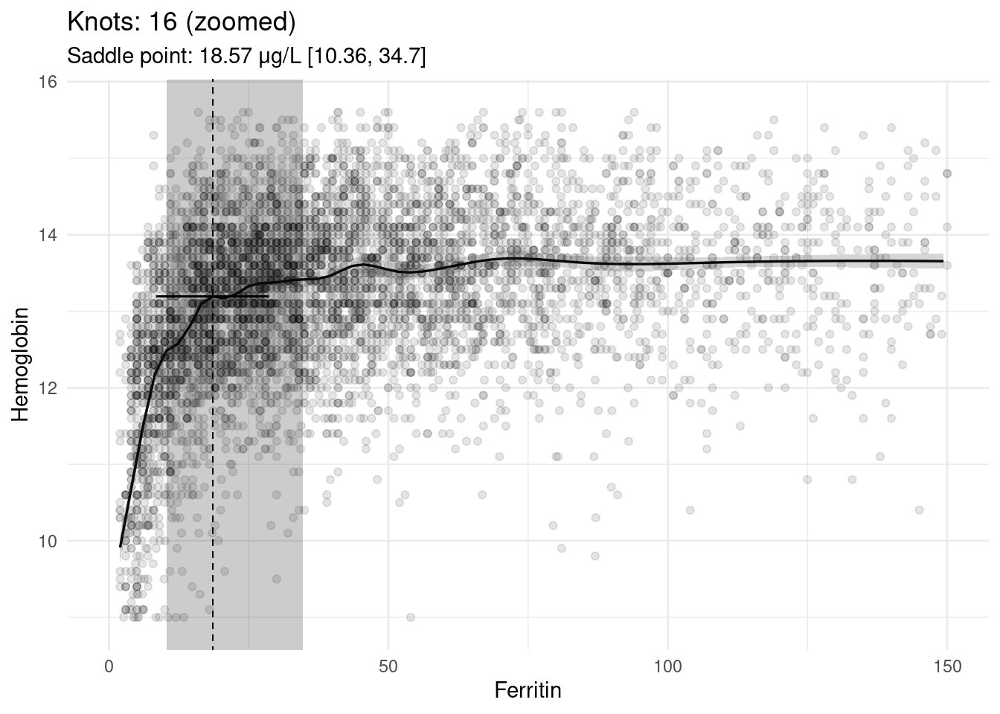
rcs_final_saddle_density_p <-
ggplot(data = data.frame(t = boot_saddle_t$t), aes(x = t)) +
geom_density() +
theme_minimal() +
labs(x = "Saddle point",
y = "Density")
ggsave(paste0(FIGUREPATH, response, "_rcs_final_saddle_density.pdf"), rcs_final_saddle_density_p, width = 8, height = 6, device = cairo_pdf)
rcs_final_saddle_density_p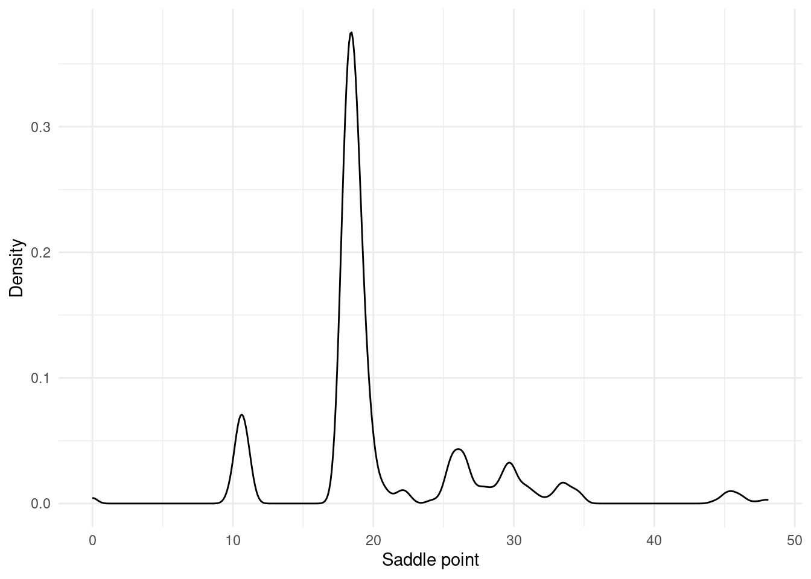
Bayesian breakpoint analysis
1 breakpoint
concat_data <- data %>%
filter(Ferritin <= 100)
# Specify model
baye_1bp_spec <- list(Hemoglobin ~ Ferritin,
~ 0 + Ferritin)
# Fit
baye_1bp_fit <- mcp(baye_1bp_spec,
data = concat_data,
adapt = 100,
iter = 50,
chains = 4,
cores = 4)Parallel sampling in progress...Warning: Detected creation of a 'multiprocess' future. Strategy 'multiprocess'
is deprecated in future (>= 1.20.0) [2020-10-30]. Instead, explicitly specify
either 'multisession' (recommended) or 'multicore'. Starting with future 1.31.0
[2023-01-31], 'multiprocess' is the same as 'sequential'.Finished sampling in 13.1 secondssaveRDS(baye_1bp_fit, paste0("~/who_ferritin_comment/results/", response, "_bayesian_1bp.rds"))
# Plot
bay1_p <- plot(baye_1bp_fit) +
theme_minimal() +
coord_cartesian(xlim = c(0, 100))Coordinate system already present. Adding new coordinate system, which will
replace the existing one.ggsave(paste0(FIGUREPATH, response, "_bay1bp.pdf"), bay1_p, width = 8, height = 6, device = cairo_pdf)
bay1_p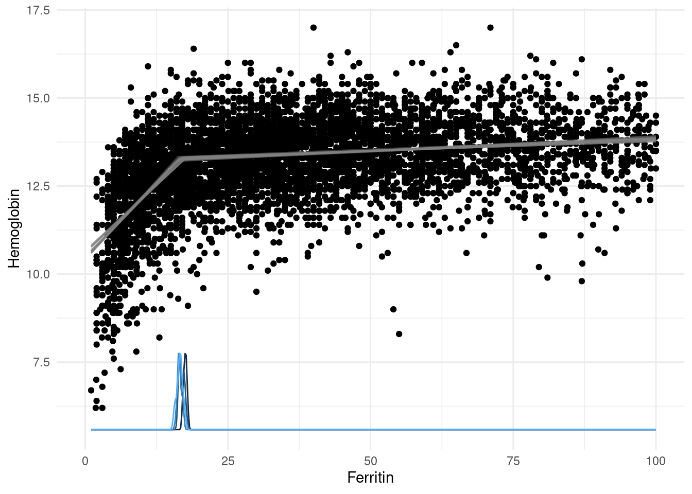
2 breakpoints
# Specify model
baye_2bp_spec <- list(Hemoglobin ~ Ferritin,
~ 0 + Ferritin,
~ 1 + Ferritin)
# Fit
baye_2bp_fit <- mcp(baye_2bp_spec,
data = concat_data,
adapt = 100,
iter = 50,
chains = 4,
cores = 4)Parallel sampling in progress...Warning: Detected creation of a 'multiprocess' future. Strategy 'multiprocess'
is deprecated in future (>= 1.20.0) [2020-10-30]. Instead, explicitly specify
either 'multisession' (recommended) or 'multicore'. Starting with future 1.31.0
[2023-01-31], 'multiprocess' is the same as 'sequential'.Finished sampling in 33.2 secondssaveRDS(baye_2bp_fit, paste0("~/who_ferritin_comment/results/", response, "_bayesian_2bp.rds"))
# Plot
bay2_p <- plot(baye_2bp_fit) +
theme_minimal() +
coord_cartesian(xlim = c(0, 100)) Coordinate system already present. Adding new coordinate system, which will
replace the existing one.ggsave(paste0(FIGUREPATH, response, "_bay2bp.pdf"), bay2_p, width = 8, height = 6, device = cairo_pdf)
bay2_p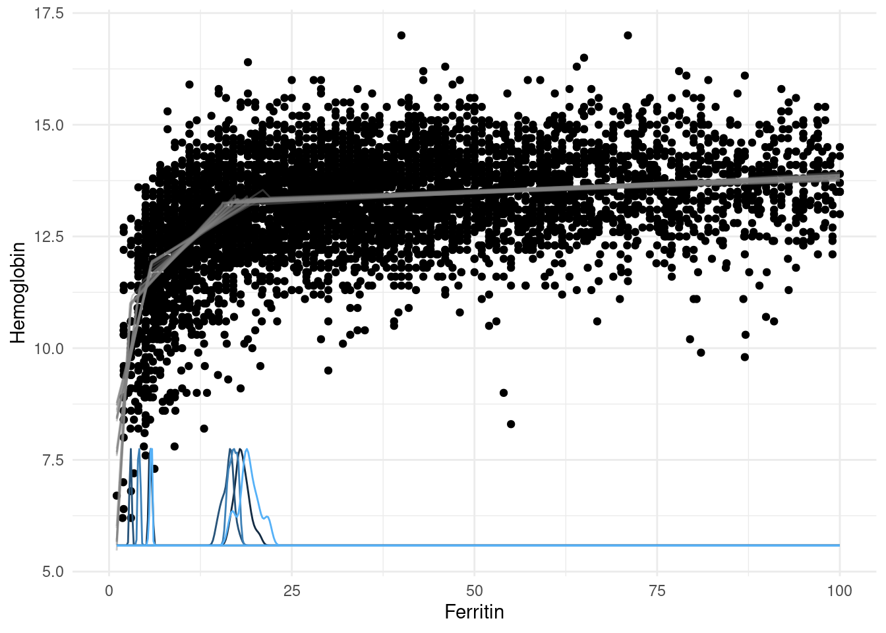